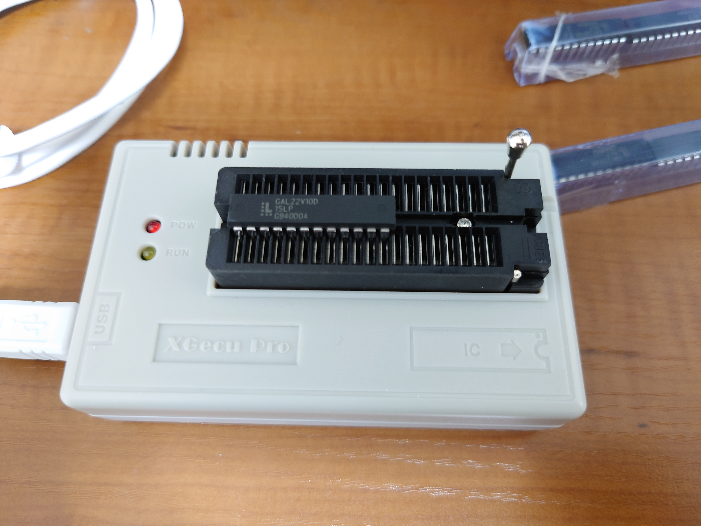
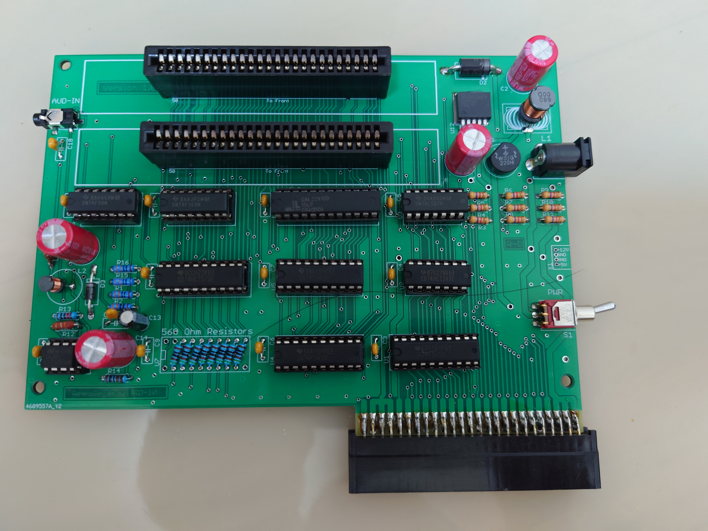

CASIO MX-10/15/101用拡張ボード RD-10 (2022年8月24日現在)
CASIO MX-10/15/101用の CASIO純正拡張ボード KB-10 は、すでにレアアイテムでなかなか手に入りません。
そこで、海外のRETRO-DEPOTさんが、独自に拡張ボードを開発されました。
開発物は、github RD-10-Docking-Stationにて公開されています。
基板のガーバデータも置いてあるので、そこから製造することが可能です。
私は未だに基板製造メーカーへ依頼したことが無かったので躊躇していたのですが、スターニャンさん@Twitter
が、ご自身のために製造した基板の余剰分を譲ってくれました。
(※もう余剰基板はないので、くれぐれも問い合わせたりしないように!!)
ということで、githubの部品表などを頼りに組み立て始めたのでした。

部品を取り付けたところ。

GAL22V10 に TL866IIplus でロジックデータを書き込み。

GALも取り付けて完成。
[次へ]